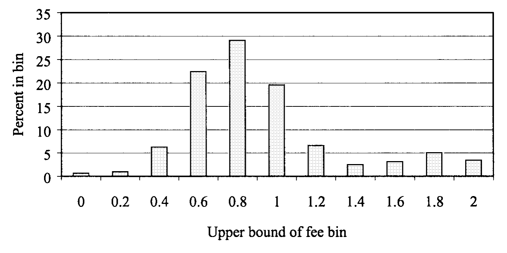
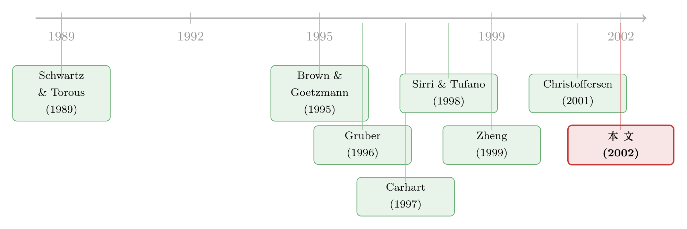

费率千差万别，卖的却是同一碗水——货币基金定价里那条「需求曲线」的暗线
本文读的是 Christoffersen & Musto (2002, Review of Financial Studies)：当一群基金的毛收益几乎一模一样、却收着天差地别的费用时，价差的真正来源不在「业绩预期」，而在「还留在基金里的是什么人」。业绩敏感的投资者会从差基金迁往好基金，把价格敏感性一并带走；于是留下来的人越「迟钝」，基金就越敢涨价。作者把这条逻辑从按揭市场借来，命名为 seasoning model，并用横截面、机构对照组、以及基金合并三种证据把它钉死。
1 一个让人不舒服的事实
先说一个几乎所有人都知道、却很少有人追问的现象：同样是货币市场基金 (money market fund)，它们买的是同一批短期票据，赚到的毛收益 (gross return) 几乎分毫不差——可投资者最后拿到手的净收益 (net return)，却能差出一大截。原因简单到近乎荒唐：它们收的费用差太多了。
这本不该发生。在一个像样的市场里，差不多的东西应该卖差不多的价。股票型基金的费率为什么乱，人们还能找借口——收益太吵、风险调整又含糊，谁也说不清谁更值钱。可货币基金不一样。它几乎是金融业里最接近「大宗商品 (commodity)」的产品：一篮子隔夜票据，收益高度同质。Domian and Reichenstein (1998) 干脆做了个回归，发现光是费率（外加一个「是否只投政府债」的虚拟变量）就能解释 84% 的业绩差异。
于是 Christoffersen 和 Musto 在文章一开头就把这层窗户纸捅破了：他们把样本里所有基金 1996 财年的净业绩 P（当年净收益减去其他所有货币基金的市值加权平均收益）对净费率 f 做了一个回归——
$$ P_i = 0.610 - 1.031\, f_i + \varepsilon_i, \quad R^2 = 94\%,\; N = 224 $$
斜率 (44.9) 和 (−60.4) 的 t 值大得吓人。斜率几乎正好是 −1，R² 高达 94%。这两个数字合起来只说了一件事：这些基金赚的钱几乎一样多（毛收益标准差仅 10bp），多收一分费就少给投资者一分收益（净费率标准差却有 35bp）。 货币基金的「业绩持续性」，说穿了不过是「费率的持续性」。
那么问题就来了，而且尖锐得让人没法回避：既然没有任何理由相信谁能跑得更好，为什么还有投资者心甘情愿地为同一碗水付着两倍、三倍的价钱？

Figure 1: (i.e., net return in 1996 minus the value-weighted average total
2 答案也许不在基金，而在投资者自己
接着，一个自然的猜想是：会不会，差别根本不在基金，而在坐在基金里的那群人？
每个消费者都带着自己的口味、信念和钱包进入市场，这意味着每个人都有一条属于自己的需求曲线 (demand curve)。基金在定价时，要把这成千上万条需求曲线「加总」进自己的算盘——但这里有个关键：这些人并不是无差别地、等权重地进入这道方程的。一只基金能接触到的，永远只是消费者里一个更小的子集；如果这些子集是无偏的随机抽样，那这就是句废话。可它们偏偏不是。
真正关键的一步，来自 Gruber (1996) 和 Zheng (1999) 的一个发现：投资者对「基金前景变化」的反应并不一致。一部分钱会从差前景流向好前景，另一部分钱却赖着不走。 这一进一出，就像一台离心机：把业绩敏感的投资者越筛越多地甩进好基金，把业绩不敏感的投资者越攒越浓地留在差基金里。
而费用，本质上不过是业绩的一种「负向扣减」。于是这条筛选逻辑就有了一个再直接不过的定价含义：
留在差前景基金里的人，恰恰是对价格最不敏感的那批——所以，他们理应被收更高的费。
这个直觉，作者坦承是从房贷市场「借」来的。Schwartz and Torous (1989) 早就指出：当一次再融资 (refinancing) 机会出现后，仍然赖在固定利率资金池里没走的那些房贷人，已经完成了一次自我选择 (self-selection)——他们对再融资机会相对迟钝，因此（撇开信用风险）他们未来还款的现值是带溢价的；机会越好，自选择越彻底，溢价越高。Christoffersen 和 Musto 的核心主张，就是把这条「负债端」的常识，原封不动地搬到了「资产端」：好不容易没被高费率赶走的投资者，本身就是一种筛选结果。
他们给这套机制起了个名字——seasoning model（姑且译作「沉淀模型」）。两个最生动的注脚摆在那里：一是 Steadman 家族基金，曾在 1960 年代风光无限，后来常年垫底，费率高到 1998 财年的 American Industry Fund 一年要收 22.57%——可那一财年期初的 134.7 万份额，期末竟还剩 113.8 万份没走；二是 Dreyfus Worldwide Dollar Fund，早年靠极低费率把规模催到 100 亿美元，后来一路涨价，资产掉到 20 亿，稳定在巅峰的 20%。那些挺过了多年高费、死活不走的人，被「对价格不敏感」这道筛子选得既彻底又昂贵。
3 把直觉变成可检验的回归
直觉再漂亮，也得能被数据反驳才算数。然后，作者做了一件很聪明的事：他们没法直接观测一只基金对自己投资者的全部了解，但他们能观测资产的逐周波动。
如果「更大的资金流出 → 更强的价格不敏感自选择 → 更高的最优费率」这条链条成立，那么一只经历过更多流失 (attrition) 的基金，今天就该收更高的费。他们用 Q/MAX 来度量资产留存率——Q 是基金 1995 财年最后一周的净资产，MAX 是它历史上（1987 年 11 月至 1995 年末）达到过的最大规模；那么 1 − Q/MAX 就是流失率。预测很清楚：Q/MAX 越低（流失越多），费率 f 越高。 由于既有研究 [Cook and Duffield (1979), Baumol et al. (1990)] 早就指出资产规模本身会影响定价，他们把 Q 也单独放进回归控制。
在 200 只零售基金的横截面上，最干净的那个设定给出：
这一项的 t 值是 (−3.27)，R²=5.1%。换算成经济量级：系数约 −0.2，意味着在控制掉「流失本身带来的规模缩水」之后，一个在 50% 流失之后仍留在基金里的投资者，要比别人多付大约 10bp 的费。 无论是否额外控制规模 Q、还是放进 Q² 允许非线性，这个系数都稳稳地显著为负。作者还报告（未列表）：在没有阶梯费率 (breakpoints) 的子样本里、在豁免费用 (fee waiver) 与不豁免的基金之间，效应几乎一致——这堵死了「是合同费率上限或阶梯结构在驱动结果」的退路。
但真正画龙点睛的一笔，是那个对照组。同样的四个回归，搬到 97 只机构 (institutional) 基金上重做一遍。机构投资者背后是专业人士，「赖着不走」的自选择故事对他们几乎不适用，所以预测是：Q/MAX 不该进来。结果呢？机构样本里 Q/MAX 的系数从未为负——不控制规模时不显著为正，控制规模后甚至显著为正（如 +0.121，t 值 2.03）。一正一负，两个世界。这条「流失→未来涨价」的关系，不仅扛得住规模的考验，而且专属于那些以普通消费者为股东的基金。
4 还有第二个源头：你是从哪扇门进来的
到这里，一个谨慎的读者会立刻反问：会不会只是某些基金年复一年地就是收得贵，沿途自然伴随着流失？换句话说，到底是费率驱动了资金流，还是资金流驱动了费率？这是个经典的鸡生蛋问题。
作者绕开它的办法，是换一个不可能是「过去费率之果」的解释变量：分销渠道 (distribution channel)。Capon, Fitzsimons, and Prince (1996) 与 Alexander, Jones, and Nigro (1998) 的调查都指向同一结论——通过直销 (direct) 渠道进来的投资者，比被销售队伍（经纪人 broker）拉进来的投资者，对价格明显更敏感。那么按「更不敏感的需求曲线」定价的基金，就该收得更高。
数据正好对上：直销与经纪渠道的合同费率（毛费率 gross）几乎相同（1.604 对 1.578），可直销基金主动收的净费率却显著更低（0.929 对经纪的 1.131）。同一份「出厂价」，直销基金选择让利，正因为它们面对的是一群更会算账的人。这与流失结果互为印证：需求曲线的形状，确实在左右价格。
（关于「需求曲线本身能决定价格」这件事在股票市场的版本，可参见《套利者的资产负债表，给每只股票标了一个价》 与《为什么「理性投资者」也会拒绝换股？》；而投资者「追着去年收益跑」的那一面，则见《钱追着「去年的收益」跑》。）
5 反转：用基金合并做一次「准实验」
横截面再漂亮，也总有人嘀咕内生性。于是反转出现在最后一招——基金合并 (merger)。
合并的妙处在于：它给存续基金的需求曲线带来一次离散的、外生的位移，同时又把基金本身的服务质量、产品性质都基本控制住了。并入目标基金的股东之后，存续基金面对的，是「自己原来的需求曲线」与「目标基金的需求曲线」的叠加；而一份基金份额还是那份份额。作者解了一个简单的模型：从两只基金各自的资产/流失轨迹里反推出它们各自的需求曲线，再沿着合并后的合并需求曲线挑出利润最大化的价格——也就是说，模型能对每一桩合并事先预测存续基金该涨价还是降价、涨降多少。
样本是 1987–1997 年间 47 桩 Tier 1/Tier 2 零售货币基金之间的合并（其中 45 桩有完整费率数据）。结果是：这套需求侧模型，解释了价格修订中相当显著的一部分；而且即便控制住「因合并导致的规模变化与平均账户规模变化所应带来的预期重新定价」，结论依旧成立。最有意思的是，效应在合并前已有费用豁免的收购方那里尤其强——因为豁免给了它们「无摩擦地重新定价」的更大余地。无条件地看，合并似乎涨价降价各占一半、毫无规律；可一旦用「需求曲线的创新」这把尺子去量，谁会涨、谁会降、降多少，竟然被可靠地预言了出来。
这正是全文最优雅的地方：横截面证明「相关」，机构对照组排除「噪声」，合并实验补上「因果」。三块证据指向同一个核心——价格跟着需求曲线走，而需求曲线由谁留下来塑造。
6 数据
把家底交代清楚：核心数据来自 IBC/Donoghue 的周报 Money Fund Report (MFR)，覆盖 1987 年 11 月至 1997 年 7 月，逐周记录每只自愿申报基金的资产规模与七日年化收益。MFR 估计有超过 95% 的基金会申报，且数据不存在幸存者偏差——每周都包含当周选择申报的全部基金。截至 1998 年 8 月 31 日，样本中有 293 只零售 Tier 1/Tier 2 基金（管理 5380 亿美元）、171 只机构基金（2230 亿美元）。费率数据 MFR 不含，作者主要从 Lipper 手工匹配补齐（个别合并太晚的，去 LEXIS/NEXIS 翻 SEC 文件）。资金流的度量则用如下定义，剔除收益带来的规模变化后取中位数（最小的基金会制造巨大离群值），共得 56,981 个非重叠观测：
$$ FLOW_{t+1} = \frac{Asset_{t+1} - Asset_t \cdot (1 + NetReturn_{t+1})}{Asset_t} $$
顺带一提，货币基金还有两个让它成为理想试验场的特性：一是费率可以随时上下调整（拜普遍的费用豁免实践所赐 [Christoffersen (2001)]）；二是没有资本利得税的干扰——基金里既无已实现也无未实现的资本利得，因此那条「好业绩区间敏感、坏业绩区间迟钝」的凸形资金流曲线，跟税收一点关系都没有。
7 文献脉络
把这条线索捋一遍，你会看到一个漂亮的「借力」过程。最上游的两块基石，一边是房贷市场：Schwartz and Torous (1989) 用提前偿付 (prepayment) 把「留下来的人已自我选择」讲成了一个估值问题；另一边是基金业绩研究：Brown and Goetzmann (1995) 与 Carhart (1997) 确立了业绩持续性，尤其是最差基金的持续性最强。

接着，真正给本文递上钥匙的，是 Gruber (1996) 那篇《Another Puzzle》和 Zheng (1999) 的《Is Money Smart?》：它们发现净流入能赚取超额收益，并提出投资者有「活跃/迟钝」之分。Sirri and Tufano (1998) 则刻画了资金流对过去收益的凸形敏感。Christoffersen 和 Musto 站的位置，正是把 Gruber–Zheng 的「异质投资者」与 Schwartz–Torous 的「自选择溢价」缝在一起，再加上作者自己 Christoffersen (2001) 关于费用豁免的发现，第一次把「需求曲线异质性」做成了一个可被横截面、对照组与合并实验三重检验的定价命题。至于文中提到的 Nanda, Wang, and Zheng (2001)，则从「明星基金营销」角度补充了基金家族如何主动塑造投资者结构（这一面可参见《一只基金的命运，藏在它「兄弟姐妹」的成绩单里》）。
8 评论与延伸（Q&A + 研究方向）
(a) 几个可能的疑问
Q：这跟「差基金本来就敢乱收费」有什么区别？
区别正是本文要害。「乱收费」是把因果归给基金的傲慢，无法解释为什么对照组（机构基金）里同样的流失反而对应更低的费。本文的机制是需求侧的：流失改变了留存投资者的构成，从而改变了基金面对的需求曲线。机构对照组与分销渠道两块证据，专门用来把「需求」与「基金任性」分开。
Q：R² 只有 5% 的回归，结论靠得住吗？
横截面那块
R²确实低（5%–7%），但作者并不靠它单打独斗。关键是系数的符号稳定性与对照组的反转：零售为负、机构非负甚至为正，这种「同一变量在两个人群里符号相反」的模式，远比R²高低更能说明问题。再加上合并实验里需求模型对重新定价的预测力，三条腿才站稳。
Q：为什么偏挑货币基金，而不是大家更熟的股票基金？
因为货币基金毛收益高度同质（标准差仅
10bp），费率差异几乎等于业绩差异，把「业绩预期不同」这个竞争性解释直接掐灭；它没有资本利得税干扰；且费率可随时调整。这些性质让「需求曲线」这条暗线能被干净地照出来。代价是外部有效性——结论能否推广到股票基金仍是开放问题。
Q：合并实验真的「外生」吗？合并对象难道不是挑出来的？
这是最该担心的点。合并的发生与配对显然不随机（往往是同一家族内部的清理）。本文的辩护是：合并带来的是需求曲线的离散位移，而份额性质不变；并且他们控制了规模与平均账户规模变化的预期影响。但「为什么是这两只基金合并」本身可能与定价动机相关，这个内生性作者并未完全关上。
Q：费用豁免在这里到底扮演什么角色？
豁免意味着基金没收到合同允许的上限，因此它有向上、也有向下重新定价的自由。本文发现合并后的需求侧定价效应在「合并前已有豁免」的收购方那里尤其强，正因为这些基金能更无摩擦地把价格调到新需求曲线的最优点。这也反过来证明结果不是被合同费率上限卡出来的。
Q：对监管或投资者有什么现实含义？
一个略带反讽的含义是：对差基金「价格不敏感」的，恰恰是最该被保护的那群迟钝投资者，而他们正因迟钝而被多收费。这说明单靠披露费率未必有用——问题不在信息可得性，而在这群人本就不响应。任何想压低费率的政策，得先想清楚自己面对的是一条多陡的需求曲线。
(b) 几个可能的研究问题与提案
1. 把 seasoning model 搬到公司债基金 / 信用市场。 - 【经济故事】公司债基金同样收费各异，但比货币基金多了一层流动性与久期异质。若「业绩敏感者迁走、迟钝者留下」成立，那么在信用利差走阔、赎回潮过后，留存份额更「黏」的债基是否随后抬高了费率或更敢于持有不流动券？这把需求侧定价与流动性管理接上了。 - 【可行性】中。CRSP 共同基金库 + Morningstar 现金流 + TRACE 持仓可拼出来；难点是债基毛收益不再同质，需先剥离业绩/久期，识别不如货币基金干净。
2. 外资持有人的「迁徙」是否重塑了本地资产的定价。 - 【经济故事】把投资者异质性换成「本地 vs. 外资」。当某类资产经历外资撤离后，留下来的本地持有人是否更价格不敏感，从而抬高了发行人能承受的融资成本？这是 seasoning 逻辑在跨境持有上的自然延伸。 - 【可行性】中。可用基金层面的国别持仓（如 EPFR）配合债券/股票定价；识别要靠外生的资本流冲击（指数纳入、汇率事件）来近似 attrition 的「外生位移」。
3. 用「会员制/封闭式」产品的退出摩擦做更干净的自选择度量。
- 【经济故事】本文的 Q/MAX 是流失的间接代理。若能找到一类有明确赎回门槛或锁定期的产品，退出成本本身提供了对「谁会留下」的外生变化，可直接检验「退出越难→留存越迟钝→费率越高」。
- 【可行性】中偏低。理想数据（账户级持有时长、赎回行为）多为专有；但部分养老金计划或私募产品或可获得，识别上比横截面强。
4. 合并作为需求曲线位移的「准实验」推广到 ETF / 指数产品。 - 【经济故事】ETF 份额合并或基金清盘并入，同样制造需求曲线的离散叠加，且份额标准化程度更高、税收处理更清晰，可作为本文合并实验的升级版去检验需求侧定价。 - 【可行性】高。ETF 合并事件公开可查，持仓与费率透明，事件研究框架成熟，doable。
9 我的判断
先说贡献。这篇文章最了不起的地方，不是哪一个系数，而是把一个看似行为金融的现象（迟钝投资者被多收费）翻译成了一个干净的需求侧定价命题，并用三套互补的证据把因果一步步逼出来。尤其那个机构对照组——同一个 Q/MAX，在零售样本里显著为负、在机构样本里却为正——是全文最有说服力的一笔，几乎以一己之力排除了「差基金天生贵」的平庸解释。把房贷提前偿付的自选择直觉移植到基金资产端，这种「借力」本身就是一流的研究品味。
对识别的担忧，我有两点。其一，合并实验的「外生性」是被声称的，而非被证明的：为什么偏偏是这两只基金合并、合并时点如何选择，都可能与定价动机内生相关，作者控制了规模却没真正处理配对的内生性。其二，横截面回归的解释力很低（R² 仅 5%–7%），虽然符号稳定且有对照组背书，但「需求曲线异质性」之外显然还有大量未被建模的定价力量，本文并未声称、也无法声称它是主因。
后续我最想看到的，是把这条暗线接到信用市场与外资持有人上：在公司债基金里，赎回潮后的「留存黏性」是否预测了随后的费率与持仓流动性选择？以及，当一类资产的持有人结构因外生冲击而「换血」时，留下来的人究竟把发行人的融资成本顶高了多少。货币基金是一块干净的试验田，但真正昂贵的需求曲线，藏在那些毛收益并不同质、却同样有人「赖着不走」的市场里。
参考文献
- Alexander, G. J., J. D. Jones, and P. J. Nigro (1998). Mutual Fund Shareholders: Characteristics, Investor Knowledge and Sources of Information. Financial Services Review 7, 301–316.
- Baumol, W. J., S. M. Goldfeld, L. A. Gordon, and M. F. Koehn (1990). The Economics of Mutual Fund Markets: Competition versus Regulation. Kluwer Academic Publishers.
- Brown, S. J., and W. N. Goetzmann (1995). Performance Persistence. Journal of Finance 50, 679–698.
- Capon, N., G. Fitzsimons, and R. Prince (1996). An Individual Level Analysis of the Mutual Fund Investment Decision. Journal of Financial Services Research 10, 59–82.
- Carhart, M. M. (1997). On Persistence in Mutual Fund Performance. Journal of Finance 52, 57–82.
- Christoffersen, S. E. K. (2001). Why Do Money Fund Managers Voluntarily Waive Their Fees? Journal of Finance 56, 1117–1140.
- Cook, T. Q., and J. G. Duffield (1979). Average Costs of Money Market Mutual Funds. Federal Reserve Bank of Richmond Economic Review 65, 32–39.
- Domian, D. L., and W. Reichenstein (1998). Performance and Persistence in Money Market Fund Returns. Financial Services Review 6, 169–183.
- Gruber, M. J. (1996). Another Puzzle: The Growth in Actively Managed Mutual Funds. Journal of Finance 51, 783–810.
- Nanda, V., Z. J. Wang, and L. Zheng (2001). Family Values and the Star Phenomenon. Working paper 01-007, University of Michigan.
- Schwartz, E. S., and W. N. Torous (1989). Prepayment and the Valuation of Mortgage-Backed Securities. Journal of Finance 44, 375–392.
- Sirri, E. R., and P. Tufano (1998). Costly Search and Mutual Fund Flows. Journal of Finance 53, 1589–1622.
- Zheng, L. (1999). Is Money Smart? A Study of Mutual Fund Investors' Fund Selection Ability. Journal of Finance 54, 901–933.